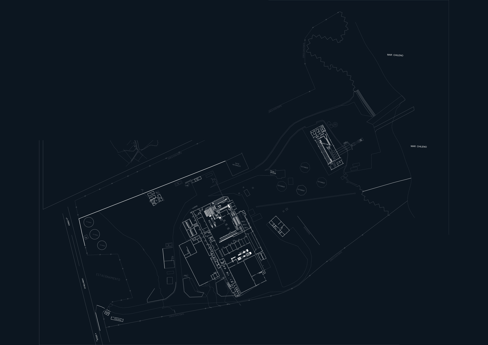

PLANOS AGUAS
Planta Principal · Red PN10 · Dulce / Salada
Local
Oscuro
Resumen
QR
Editar
Dulce
0
Salada
0
Caliente
0
Por confirmar
0
Recinto
Vector
Plano vec
⚙

＋
－
⤢
100%
Ajuste fino · capas
✕
Opac. Plano
100%
Opac. Recinto
92%
Mover X
0
Mover Y
0
Rotar °
0.00°
Escala %
0.00%
Resetear
Copiar matriz CSS
Mover/rotar/escalar aplica al recinto (alrededor del centro del plano-base). Si la posición queda perfecta, "Copiar matriz" y pegámela acá para grabarla como baseline.
Capas vectoriales (DXF)
se ven al activar VECTOR
Vector solo en zonas recortadas
Restablecer capas
Apagar todas
Plano-base vectorial
se ven al activar PLANO VEC
Usar solo vectorial (sin .png)
Restablecer capas
Apagar todas